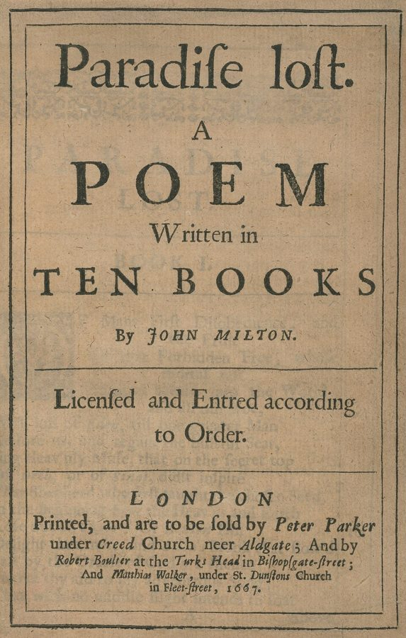
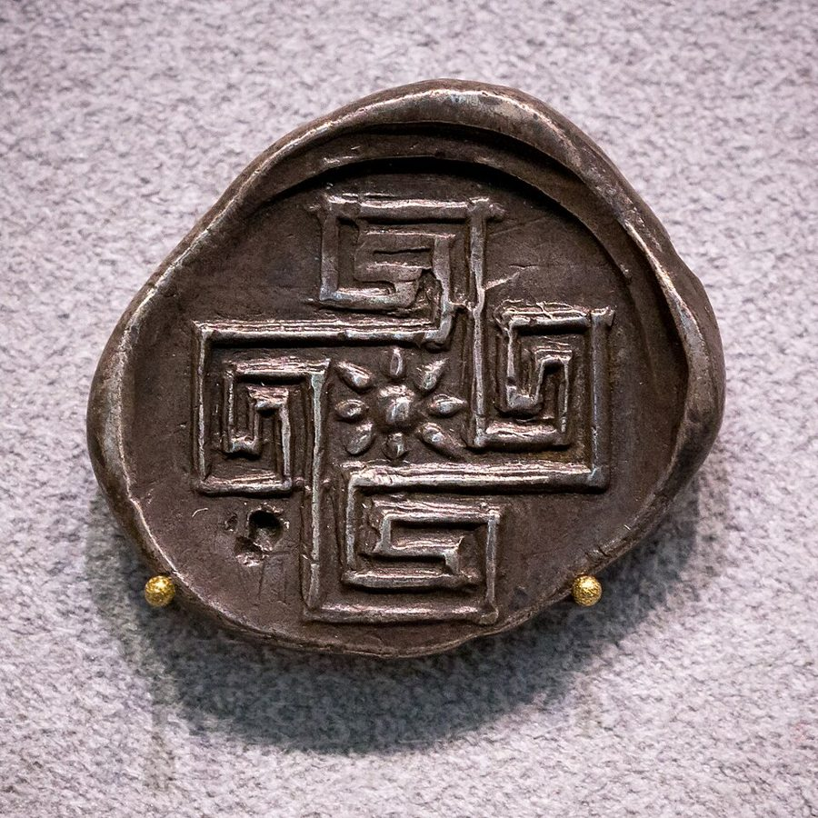
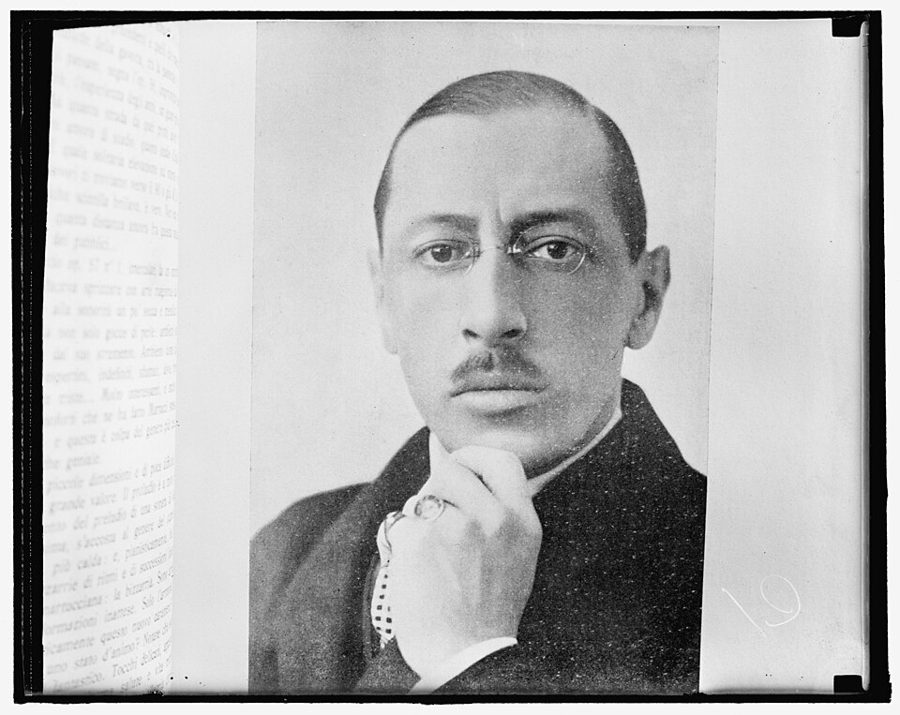

读之前
这一页是报告 17 的前半：10 月 3 日到 14 日，七天的记录，约 4600 词。上一篇报告里，他自己算出、又让别人证实了：提高的智力会退回去。这一页就从这里写起。读的时候抓两条线：一条是他手里的东西还剩多少（测验、书、唱片、钢琴、音乐会）；一条是他和身边的人：见谁，不见谁。留意几个反复出现的词：窗子、迷宫、洞，还有 level（层）。
查理此刻：手术后七个月。9 月中旬 Hallston 大学证实了他的推算：人工提高的智力会衰退，速度和当初提高的幅度成正比。Algernon 死了，脑子变轻，他把它埋在后院。他开始丢三落四、动不动发火。Alice 听到结论时哭着跑开了。他去 Marks Street 见了母亲 Rose 和妹妹 Norma，Rose 最后拿起了刀；他决定原谅她，哭着走回车边，回头看见窗口贴着一张男孩的脸。
读的时候带着这几个问题。不用先找答案，读完回来对照「检查一下理解」。
查理说这些报告是他「对人类的贡献」。这一页里，他什么时候急着写，什么时候不想写？§1 §5 §7
留意他对 Strauss、对 Burt 说话的口气，和他事后在报告里怎么看自己的口气。§2 §5
10 月 4 日那一段是他看见的东西，不是发生的事。边读边记下出现过哪些画面，有哪几样你在前面的页里见过？§3
level、floor 这类说高低的词在这一页出现了几次？各是谁说的，说的是什么？§5 §8 §9
分节地图
这一页有七天的报告；10 月 4 日那一天原书用 *** 分成三段，所以地图上是九条。读完一条打个勾；每条下面的英文是那一条开头的几个词，在 Kindle 里搜它就能跳过去。没读的那几行先模糊着，免得提前看到情节，点一下就能看清。全页约 4600 词，一次读完。
10 月 3 日约 300 词 Downhill. Thoughts of suicide to stop … 很短。留意「窗边等着的查理」，和他为什么夜里不肯睡。 10 月 4 日约 800 词 Strangest therapy session I ever had. … 治疗室里。前半是他对 Strauss 的一串玩笑，留意哪些是理发店的说法；最后几段开始变样。 10 月 4 日（续）约 700 词 Upward, moving, like a leaf in … 没有情节、没有对话，全是他看见的。慢慢读，记下画面一个接一个怎么变。 10 月 4 日（续）约 100 词 I came out of it at … 回到沙发上。留意最后提到的柏拉图。 10 月 5 日约 1000 词 Sitting down to type these reports … 回实验室做老测验。留意他对 Burt 的两种口气，和那个电梯的比方。 10 月 7 日约 400 词 Strauss tried to see me again … 一本几个月前读过的书，和一段回忆。留意回忆里有几个人在说话。 10 月 10 日约 200 词 Usually at night I go out … 夜里出门走。留意「好像以前发生过」那一句，想想你在哪一页见过。 10 月 11 日约 1000 词 When I came into my apartment … 这一页最长的一条，前半几乎全是对话。留意 owl、dodo、zoo 几个说法，和后半的迷宫。 10 月 14 日约 100 词 I wake up in the morning … 很短。留意最后一句他想要什么。
背景：书里默认你知道的事
按在书里出现的顺序排，标题前是节号。人名后面括号里是中译本的译名，读者想对照译本时用。
§1 这一页出场的人，和那台 hi-fihi-fi 是 high fidelity（高保真）的简称，1950–60 年代美国人家里流行的音响，放黑胶唱片用，讲究的人把唱机、放大器、喇叭分开配。查理住在 43 街和第十大道一栋楼的四楼（14a 页），楼上楼下住着别的人家。这一页出场的人，下面的卡片只写你此刻已经知道的。
Mr. Vernor 维诺先生 住在查理楼下的邻居，这一页第一次出现。
Dr. Strauss 斯特劳斯医生 精神科兼神经外科医生，手术后一直给查理做谈话治疗（07、09 页）。
Burt Selden 伯特 心理系的研究生，从报告 2 起给查理做测验，大会上劝过他（13b 页）。
Professor Nemur 尼姆教授 实验的主持人，和查理早已闹僵。
§2 理发椅和沙发：本我、自我、超我07 页讲过 Strauss 那张躺椅和精神分析的老做法。这一条查理拿精神分析开了一串玩笑，要懂几个词。弗洛伊德 1923 年把心分成三块：本我（id）是原始的欲望，超我（super-ego）是良心和规矩，自我（ego）夹在中间应付现实。他 1901 年的书还认为，口误（slip of the tongue）会泄露被压下去的念头。当时一次治疗按五十分钟算，1954 年就有一本讲精神分析病例的书叫 The Fifty-Minute Hour（五十分钟的一小时）。
§2 神秘主义者说的那种体验§2 末尾查理问自己：这是幻觉，还是神秘主义者（the mystics）描述过的东西？美国心理学家 William James 在《宗教经验种种》（The Varieties of Religious Experience，1902）里讲神秘体验，列了四个特征：说不出来；像是得到了某种真知；来得快、去得快；人是被动的，像被更大的力量接住。读 §3 时可以拿这四条对照着看。书里没有说查理读过这本书。
§4 柏拉图的洞穴柏拉图《理想国》第七卷的寓言：一群人从小被锁在洞里，只能面朝洞壁，看身后火光投到墙上的影子，以为影子就是世界。有一个人被松开，走出洞口，看见了太阳和真实的东西。等他回到洞里，眼睛一时适应不了黑暗，看不清影子，别人就笑他上去一趟把眼睛弄坏了，觉得根本不该往上走。§4 末尾查理想到的是这个寓言里的一句。16b 页他在镜子前也说过，他不能回到那个洞里去。
洞外：太阳和真实的东西
往上的路
墙上的影子
锁着的人只能看墙
矮墙
举着器物走过的人
火
本站示意图：洞穴寓言的布置。被锁住的人背对火光，只看得见墙上的影子；走出洞口的人才看见太阳。 §6 《失乐园》英国诗人弥尔顿（John Milton）的长诗，1667 年初版分十卷，1674 年再版改成十二卷。写撒旦反叛上帝被打入地狱，又潜入伊甸园引诱亚当和夏娃吃了知识之树的果子（知识之树见 11b 页），两人被逐出乐园。全诗不押韵，句子长，典故多。报告 10 里，查理在大学咖啡馆听学生们谈论过弥尔顿。

1667 年伦敦初版的书名页，写着「一首分十卷的诗」。John Milton，公有领域，维基共享资源 §6 当时的识字课本美国小学低年级的识字课本，1930 年代到 1970 年前后流行一种写法：句子极短，同几个词翻来覆去地用，配大幅插图。最有名的是 Scott Foresman 出版的那一套，主角叫 Dick 和 Jane。这类课本教的是整词认读（look-say）：不按字母拼读，而是把整个词的样子看熟。书里查理念的是 Jack，不是哪一套课本的原文。
§8 阿里阿德涅的线希腊神话：克里特国王米诺斯把半人半牛的怪物弥诺陶洛斯（Minotaur）关在迷宫里，雅典要定期送少男少女进去喂它。雅典王子忒修斯（Theseus）自愿前往，国王的女儿阿里阿德涅（Ariadne）给了他一团线：一边走一边放线，杀了怪物，再顺着线走出来。英语里 Ariadne’s thread 指走出困境的线索。这本书从报告 1 起就是迷宫：查理和 Algernon 比走迷宫，13b、14a 页还出现过迷宫终点的 goal-box。

克里特岛 Knossos 约公元前 330–300 年的银币，这一面是迷宫图案。图片说明写着另一面是 Ariadne 的头像（图上看不到）。ArchaiOptix，CC BY-SA 4.0，维基共享资源 §9 Stravinsky斯特拉文斯基（Igor Stravinsky，1882–1971），俄国出生的作曲家。1913 年在巴黎首演的芭蕾舞剧《春之祭》节奏狂暴、和声刺耳，首演当场引起骚动。他 1939 年起定居美国，1960 年代还在世，常常亲自指挥演出。查理喜欢音乐：14a 页他租的公寓里有一架钢琴，14c 页他写了第一首钢琴协奏曲。§1 里他说自己已经不弹钢琴了。

Harris & Ewing 图片社 1937 年的玻璃底片，翻拍的是一本书里印的 Stravinsky 肖像。Harris & Ewing Collection，公有领域，维基共享资源 词与短语
三类：紫边的「查理拼的」是他拼错的词，先写还原的拼法；黄边的「每个字都认识」是熟词生义、俚语、别人话里的弦外之音；其余是这里用法特别的词。斜体小字是原句里的几个词，在 Kindle 里搜它就能找到原文，拼错的照拼错的抄。这一页没有拼错的词。
§1 10 月 3 日
downhill
… Downhill. Thoughts of suicide to stop …
走下坡路，每况愈下
整条报告的第一个词，一个词就是一句。go downhill 说身体、处境一天不如一天。
hi-fi set
… about playing the hi-fi set late …
高保真音响
见「背景」§1。
begrudge
… I begrudge every second of waking time.
舍不得（让它白白过去）
begrudge 常见的意思是「嫉妒、不情愿给」。这里是醒着的每一秒都舍不得拿去睡。
let go
… because I’m afraid of letting go.
松手，放开
字面是松开手；这里说的是放任自己睡过去。他先说了不只是怕做噩梦。
there’ll be time enough to sleep later
… there’ll be time enough to sleep later, …
以后有的是时间睡
后面跟着 when it’s dark（等天黑了）。字面是一句平常话，放在这一条里，dark 读得出别的意思：等脑子暗下去以后。这是本站的读法。
bang on the pipes
… always banging on the pipes or …
敲暖气管（抗议）
老公寓的暖气管上下相通，敲一下楼上听得见。邻居嫌吵，就敲管子或敲天花板。
it was all I could do to
… it was all I could do to …
费了好大劲才（忍住）
不是「我能做的就这些」。后面接 keep from hitting him：他拼命才忍住没动手。
kid oneself
… I’ve been kidding myself anyway. …
骗自己
kid 作动词是「开玩笑、哄」。他说其实早就不喜欢那种音乐了。
§2 10 月 4 日
the fifty minutes
… when the fifty minutes are up, …
（一次治疗的）五十分钟
见「背景」§2。be up 是「时间到了」。
lather up
… the barber does to lather up …
（刮脸前）抹上肥皂沫
理发店的一套：放倒椅子、抹肥皂、刮脸、扶起来递镜子。他把这一套一样样对到心理治疗上。
a little off the top
… A little off the top of …
（理发）顶上剪短一点
顾客对理发师的老话。查理把它接到 anxiety 上：焦虑请从顶上剪掉一点。译本：「把我的焦虑顶部剪掉一些」。字面都在，理发店里那句老话的口吻没有了。
super-ego
… Don’t trim the super-ego too close, …
超我
见「背景」§2。trim too close 是「剪得太短」，还在说理发。
egg shampoo
… come in for an egg shampoo …
鸡蛋洗发香波
他把 ego 说成了 egg，只差一个字母，马上自己改口。译本：「鸡蛋（egg）洗发精」。在中文后面括上英文，双关只能这样保住。
slip of the tongue
… notice that slip of the tongue, …
口误
见「背景」§2。照弗洛伊德的说法口误有含义，所以他要 Strauss 记下来，又抢先替他解释了一大串。
shave too close
… Or are we shaving too close?
刮得太贴肉了
还是理发的比方。a close shave 在口语里是「好险、差一点出事」，这句也可以读成：是不是碰到太近的地方了。
id
… Does an idiot have an id?
本我
idiot（白痴）和 id 开头的拼法一样。他拿自己开玩笑：白痴也有本我吗？idiot 是当时的旧称，现在不这么说了。
stolid
… I sighed. “Stolid Strauss—unmovable. I’ll tell …
不动声色的，木讷的
两个 S 开头，像给 Strauss 起的外号；破折号后面的 unmovable 是他自己的注解。
material
… great deal of material to bring out …
（治疗时）要谈的内容
心理治疗的行话：病人带来谈的梦、回忆、联想都叫 material。后面那一串省略号连着的词就是。
how brilliant, how subtle
… Oh, how brilliant, how subtle he …
（反话）多高明，多细腻啊
要反着读。Strauss 只问了一句「你想谈谈吗」。
the mystics
… Or the things described by the mystics?
神秘主义者
见「背景」§2。
§3 10 月 4 日（续）
the finite and mortal world
… to the finite and mortal world …
有限的、终有一死的世界
和前面「与宇宙融为一体」相对：那一点轻轻的拉扯，把他拽回人间。
the glove of my flesh
… into the glove of my flesh.
肉身这只手套
把意识比作手，身体是套在外面的手套。前面半句是把意识的手指一根根伸回去。
microcosm
… merge into microcosm. There will be …
小宇宙
microcosm（小宇宙）和 macrocosm（大宇宙）是一对老说法：人是缩小了的宇宙。前面他膨胀成宇宙，这里反过来往里缩。
the golden disk twirling on a string
… the golden disk twirling on a string …
拴在绳上打转的金色圆片
报告 9（09 页）里，十一岁的查理把捡来的金色心形小盒拴在绳上，转着看它绞紧又松开。
the wrong end of a telescope
… through the wrong end of a telescope …
倒拿的望远镜
从物镜那头往里看，东西变得又小又远。
lotus
… (swirling lotus—that floats near the entrance …
莲花
莲花在佛教、印度教里常象征清净和觉悟。前面一直说的「多瓣的花」，到这里有了名字。
§4 10 月 4 日（续）
come out of it
… I came out of it at …
醒过来，回过神
it 指刚才那种出神的状态。
talk someone out of it
… didn’t try to talk me out …
劝人打消念头
talk someone into 是「说服去做」，talk someone out of 是「说服别做」。
§5 10 月 5 日
send for
… Professor Nemur sent for me again …
派人叫（某人）来
不是「送」。Nemur 没有亲自出面。
paper and pencil maze
… it was the paper and pencil …
纸笔迷宫
印在纸上、用铅笔走的迷宫。报告 1–6 里他第一次做的就是这种（01 页，他写成 amazed）。
be through doing
… I’m through running the maze.
不再干（某事）了
through 在这里是「做完了、到此为止」。§5 后面他又说了一遍。
blind alley
… I’m in a blind alley now, …
死胡同
迷宫里走不通的岔道也叫 blind alley。16c 里他想到被封死的记忆，也用过这个词。
feel sick about
… We all feel pretty sick about it.
（为某事）很难受
sick 在这里不是生病，是心里难过。Burt 的话。
lousy
… I was being lousy toward him.
差劲，刻薄
lousy 本义是「长虱子的」，口语里是「糟糕、恶劣」。
blow up
… “Sorry I blew up,” I said.
发火
不是「爆炸」。
keep plugging
… Keep plugging. Nothing like an education.
接着埋头干
plug away 是不声不响地苦干。查理拍着 Burt 的肩说，口气像个长辈。
back off
… he started to back off.
往后退，让步
Burt 看他脸色不对，马上改口说不做也行。
deal out the cards
… Go ahead. Deal out the cards.
发牌吧
把罗夏测验的卡片说成扑克牌。罗夏测验见 01、09 页。
stereotyped responses
… just a few stereotyped responses.
刻板的（老一套的）回答
罗夏测验看的东西之一：想法多还是少，是不是总给最常见的那几种答案。前面几项（整体还是局部、动的还是静的、看不看颜色）见 09 页的计分。
valid
… “It’s not valid,” I said. …
（测验）有效
心理测量的术语：测得出它要测的东西。他的理由是，他知道该怎么答。
project
… and project my imprint on them.
投射
罗夏这类测验叫投射测验：人把自己心里的东西投到模糊的墨迹上。
guinea pig
… I’m not a guinea pig any more.
实验品
guinea pig 是豚鼠，常被拿来做实验，所以也指「被拿来做试验的人」。13b 页他在大会上就觉得自己被当成了实验动物。
§6 10 月 7 日
See Jack run
… See Jack. See Jack run. …
看，Jack 在跑
见「背景」§6。原文是斜体，整段对话里斜体的是课本上的句子和他脑子里回响的话。
beat something into someone
… I’ll beat it into him until …
打到他记住为止
beat into 是用打的办法让人学会、记住。
break the back of
… I broke the back of it, …
弄断了书脊
back 在这里是书脊。习语 break the back of something 是「完成最难的部分」，这里只是字面意思。
torn white tongues
… its torn white tongues were laughing …
撕开的白色书页（像舌头）
撕下一半的书页张着，在他看来像一条条在笑他的舌头。
§8 10 月 11 日
dodo
… More of a dodo. A dumb …
渡渡鸟；笨蛋
渡渡鸟是印度洋毛里求斯岛上不会飞的大鸟，17 世纪后期灭绝。dodo 口语里指又笨又过时的人。前一句对方说他是 night owl（夜猫子；Some night owl 是带点调侃的感叹），他接着说自己是另一种鸟。
put in an appearance
… for me to put in an appearance.
露个面
常带点「该去应个卯」的意思，这里是半开玩笑的说法。
It just is—like a poem
… It just is—like a poem.
它不表示什么，它就是它，像一首诗
前一句是 It doesn’t mean。像是在套美国诗人 Archibald MacLeish 的诗 Ars Poetica（1926）的结尾：诗不该表示什么，而应当存在。这是本站的读法。
What’s wrong with the zoo?
… What’s wrong with the zoo?
动物园不好吗（何必来看我）
他的意思是：想看稀奇，去动物园好了。他把自己说成了供人参观的动物。
come off it
… Oh, come off it, Charlie. …
少来这一套
叫对方别装、别闹了。
fence with someone
… Don’t fence with me. I waited …
跟人兜圈子，斗嘴
fence 作动词是击剑，转指说话你来我往、躲着不正面回答。译本：「不要把我推开」。意思接近，击剑那种一来一往的躲闪没有译出来。
Is that a song?
… “Is that a song?” …
这是歌词吗
前一句听着像流行歌的歌词，他拿这个挡回去。
get out of touch
… before we got out of touch.
断了联系
touch 在这里是「联系、往来」，不是「碰」。
unwind the string
… I had unwound the string …
（一路）放开她给的线
典出阿里阿德涅的线，见「背景」§8。后半句是 found my way out of the labyrinth。译本：「我已解开她加诸的束缚」。线成了束缚，迷宫的典故也就没了；原文是顺着她给的线走出迷宫。
goal-box
… toward the goal-box of solitary death.
（迷宫的）终点盒
迷宫实验的说法：老鼠走到终点、拿到食物的那个盒子（13b、14a 页出现过）。这里每个人各走各的路，终点是孤零零的死。译本：「迈向孤独死亡的目标」。goal-box 成了目标，迷宫的意思没有了。
counterweight
… But this was the counterweight, …
配重；与之抗衡的力量
前一段说宇宙把每个人往外甩开，这一段是把人拉在一起的那一边。
§9 10 月 14 日
fight this thing
… I should fight this thing.
和这件事斗一斗
this thing 指他身上正在发生的事，他不点名。
freeze myself at this level
… freeze myself at this level and …
把自己冻在这一层
level 在这一页出现了好几次，读完可以对照「值得停下来的句子」。
查理的文字
拼错的词还是零，标点、长词、句长都在正常的范围里。曲线看不出这一页在往下走，要听的是声音。10 月 4 日他对 Strauss 一口气说了一串理发店的俏皮话，egg 和 ego，idiot 和 id，是这一页最「聪明」的地方，可他同时写下自己觉得羞愧、停不下来。切到「标点」：10 月 4 日幻象那一节是全页最高（每百词 9.2），主要是逗号：一串串并列的短语和画面（省略号不算在内）。「句长」10 月 4 日回到沙发那一小节和 10 月 7 日只有 7、8 个词，是对话和课本里的重复短句拉低的；10 月 14 日是 20，但那一条只有 140 词。
怎么写下来的也变了。报告 13 起他对着录音机口述；10 月 5 日他写，坐下来打这些报告很难，录音机开着他就没法想，于是给自己定了规矩：不写点什么就不吃晚饭。译本：「少了录音机，我根本无法思考」。和原文正相反：原文说的是录音机开着他想不了。
记忆拼图
查理的童年是一段一段想起来的。每段一张卡片：想起了什么，是被眼前的什么勾起来的。年纪是从书里推的，推不出来的写「年纪不详」。读过的页的卡片会汇总到记忆拼图 ，按年纪排好。
饭桌上念识字课本 六七岁，他坐在饭桌边念识字课本，母亲坐在旁边，用擦洗得粗糙的手指指着字，要他一遍遍重来。旁边有人劝：别吓着孩子，他比别的孩子慢，给他时间；母亲说他很正常，只是懒，要打到他学会。是拿起《失乐园》却读不懂时勾起来的。
§6 值得停下来的句子
His life is not mine to throw away. I’ve just borrowed it for a while, and now I’m being asked to return it.— §1，10 月 3 日，这一条的开头。本站译：他的命不是我能扔掉的。我只是借来用了一阵子，现在人家要我还回去。
这一条开头只用一句写到想趁自己还清醒时了结一切，没有往下写。接着他想到窗边等着的查理，就是这两句。His 指的是那个查理：16c 结尾窗口贴着的男孩的脸，14b 页他认定一直没有走、一直在等的旧查理。16b 页在浴室镜子前，他对那个查理说过身体和脑子本来是你的，又说「我是你的敌人」，不会不争就交出去。到这里，口气变成了借和还。下一段他就说，要一直写下去。
I passed your floor on the way up, and now I’m passing it on the way down— §5，10 月 5 日，查理对 Burt 说的话。本站译：我往上走的时候经过你这一层，现在往下走，又经过它。
这是他给 Burt 打的比方：我们不在同一层。09 页 4 月 18 日他写过「我到了一个新的层次」（a new level）。这一页 level 又出现了两次：10 月 11 日 Alice 说他「又差不多到了我的水平」，10 月 14 日他想把自己冻在这一层。同一个词，前面是往上走的刻度，到这里成了想抓住、抓不住的地方。
Burt、Alice 那一层
手术前
上去时经过
最高处
下来时又到了这一层
10 月 5 日，对 Burt 说又经过你这一层
10 月 11 日，Alice：又差不多到我的水平
10 月 14 日，想停在这一层
本站示意图：只画高低，不是数据。Burt 的楼层和 Alice 说的水平画成同一条线，只为看得清；线画到这一页为止。 读完想一想
1. 10 月 5 日看墨迹卡时，查理脱口说出几样东西：跪着擦地的女人、拿刀的男人、两个人在拉扯一个娃娃、隔着窗子对看的两张脸。每一样刚说出口，他就换掉。你在前面几页认得出哪几样？他为什么要换？
本站的看法 本站的读法：擦地的女人像 16c 里跪着擦本来就发亮的地板的 Rose；拿刀的人，16c 里他想到母亲、Alice、父亲、Strauss 手里都有刀；隔窗对看的脸，接 16c 结尾窗口那个男孩。拉扯娃娃的两个人书里没有对上号，可以自己想像谁。他说他知道自己在说什么，所以转开：墨迹本来就是让人往上投射的，这一次投上去的全是刚经历的家事，他不想让 Burt 看见。
2. 10 月 4 日的幻象里，他一次想往上冲出去，又被往下拉回自己里面，最后被挤过一个太小的洞口，又冷又亮，他尖叫。结合 §4 想到的柏拉图、16b 他对镜子说的「不能回到那个洞里」，你觉得「洞」对这时的查理是什么？
本站的看法 不止一层。它是柏拉图的洞：他上去看过光，现在下来了，在洞里的人眼里，他的眼睛「坏了」。它也是他要退回去的那种黑暗。幻象最后挤过窄口、冷、强光、尖叫，也可以读成出生的画面，前面还有游过潮湿的迷宫、找一个接纳他的人。这些都是本站的读法，书里没有解释，Strauss 也没有。§3 里他说他怕的不是死，是白活一场。
3. Alice 说他「又差不多到了我的水平」。这一次，惊慌没有来。你觉得是因为他变回了和她差不多的人，还是因为别的？
本站的看法 书里给了两条线索，没有说哪条是答案。一条是 Alice 的话：两人又在同一层了，报告 12 里那种说不到一起的隔阂没有了。一条是查理自己的话：也许那个查理现在明白了，她不是他的母亲，也不是妹妹。这句紧接着 16c：他刚在 Rose 的刀和那句指控里看懂了自己当年为什么被送走。本站倾向于两样都有，可以留着往后读。
对照今天
成立 后来的事实印证了这个说法部分成立 一部分对，一部分被后来的事改了被改写 后来的事实推翻了它，或者完全变了样书里的说法：受试者是自愿来的，不想做就可以不做（Burt，§5）
书里 查理撕了迷宫纸，Burt 赶紧说不做也行，「你是自愿来的」。查理当场说以后不再回来，还需要什么，从进步报告里拿。
当时 1947 年纽伦堡审判纳粹医生的判决里提出的十条原则（纽伦堡法典），第 9 条就说：实验中，受试者觉得身心已经撑不下去时，有权终止实验。书里手术的许可是妹妹 Norma 给的（01 页）。
今天 美国联邦的受试者保护法规（Common Rule，45 CFR 46）要求知情同意时告诉受试者：参加是自愿的，可以随时退出，不受处罚，也不失去本来应得的权益。退出之前已经收集的数据，美国卫生部人类研究保护办公室（OHRP）2010 年的指导说，研究者可以保留和分析。查理那句「去报告里拿」，和今天的规矩恰好对得上。核对于 2026-10。依据：纽伦堡法典（1947）第 9 条，45 CFR 46.116，OHRP《Guidance on Withdrawal of Subjects from Research》（2010）。
检查一下理解
先在心里答，再点开。答错的那题，回书里把对应那一条再读一遍。
1.（§1）楼下的 Vernor 为什么带警察上来？他们走后查理做了什么？ 查理半夜四点还把唱片放得很响，两人吵了一架，他当面摔了门。警察走后，他把唱片和唱机全砸了，说自己其实早就不喜欢那种音乐。
2.（§2）egg shampoo 是怎么回事？ 他把 ego shampoo 说成了 egg shampoo，马上改口，又自己点破这是口误，要 Strauss 记下来，接着替他做了一串解释。整段是拿精神分析看口误的办法开玩笑。
3.（§5）测验做到哪里，查理撕了纸？罗夏测验时出了什么事？ 纸笔迷宫他走得比以前慢，Burt 伸手来拿时，他把纸撕了。罗夏测验时他想说自己知道该怎么答，却忽然想不起来；慌乱中说出的东西又被他自己打断，最后把卡片扫下桌子。
4.（§6）回忆里母亲要他念什么？他念成了什么？ 母亲要他念 Run Jack run，他念成 See Jack see，再来一遍又成了 Run Jack see。1959 年的中篇里也有读不懂《失乐园》、把书扔出去的一段，饭桌边学认字的回忆是长篇加的。
5.（§7）他觉得「这一切很久以前发生过」，你能想到前面哪一次？ 报告 8 里 Halloran’s 那一晚，他迷了路，房东 Flynn 太太说是一位警察送他回家的（07 页）。书里只说 a long time ago，没说指哪一次。中篇里也有警察送他回家这一句。
6.（§8）Alice 是从哪里进来的？她说她来的理由是什么？ 从 Fay 那边的消防梯爬进来的。她说不是同情他，是同情自己；还有时间，她想和他一起过。她也说清楚了，等他去了 Warren，她会尽力忘掉他。
用一句话说这一页：
精彩回顾
隔几周回来，先看这几张卡片。想不起来的那张，点节号回到这一页，再回书里那一条。
一句话： 往下走的头两个星期：查理辞掉了治疗和实验，Alice 回来了。
借来的命 10 月 3 日，他想到窗边等着的那个查理：这条命不归他扔，只是借来的，现在要还。他决定继续写，这些报告是他对人类的贡献。
§1 把沙发改成理发椅 躺在 Strauss 的沙发上，他一口气开涮：焦虑请从顶上剪一点，egg 和 ego，白痴有没有本我。一边说一边羞愧，停不下来。
§2 我经过你这一层 纸笔迷宫走慢了，墨迹卡上想不起该怎么答，说出口的几样东西，他一说就自己换掉。他对 Burt 说上去时经过你这层，现在下来又经过，然后最后一次走出 Beekman。
§5 Run Jack run 读不懂《失乐园》，他闭上眼看见六七岁的自己在饭桌边念识字课本，母亲一遍遍叫他再来。回过神，书已经被他撕开，扔到墙角那堆碎唱片里。
§6 阿里阿德涅的线 Alice 从 Fay 那边的消防梯进来，把屋子收拾干净。这一次惊慌没有来，他说自己顺着她给的线走出了迷宫。她答应，等他叫她走时就走。
§8